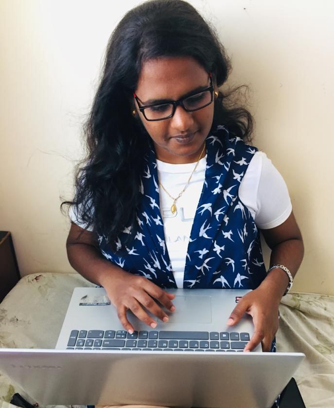

|  |
Padmasri RamkumarI am a passionate coder and I like learning new technologies.I believe at quality work and innovation. I am a good initiator and leader with capabilites to tackle challenges. |
| 2016-2020 |
|
|||
| 2014-2016 |
|
|||
| 2014 |
|
| Java | ★★★★☆ |
| C | ★★★★☆ |
| Python | ★★★★☆ |
| HTML | ★★★★★ |
| Machine Learning | ★★★☆☆ |
| Internet Of Things | ★★★☆☆ |